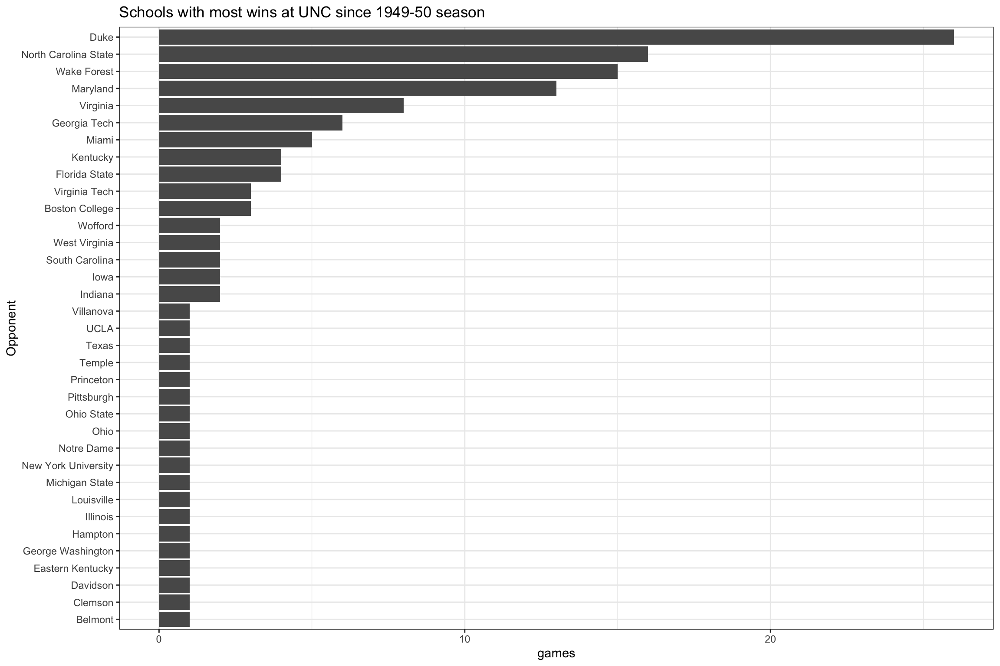
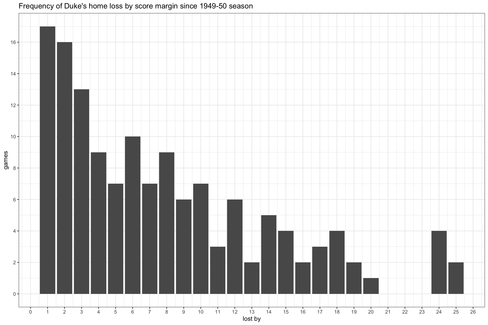
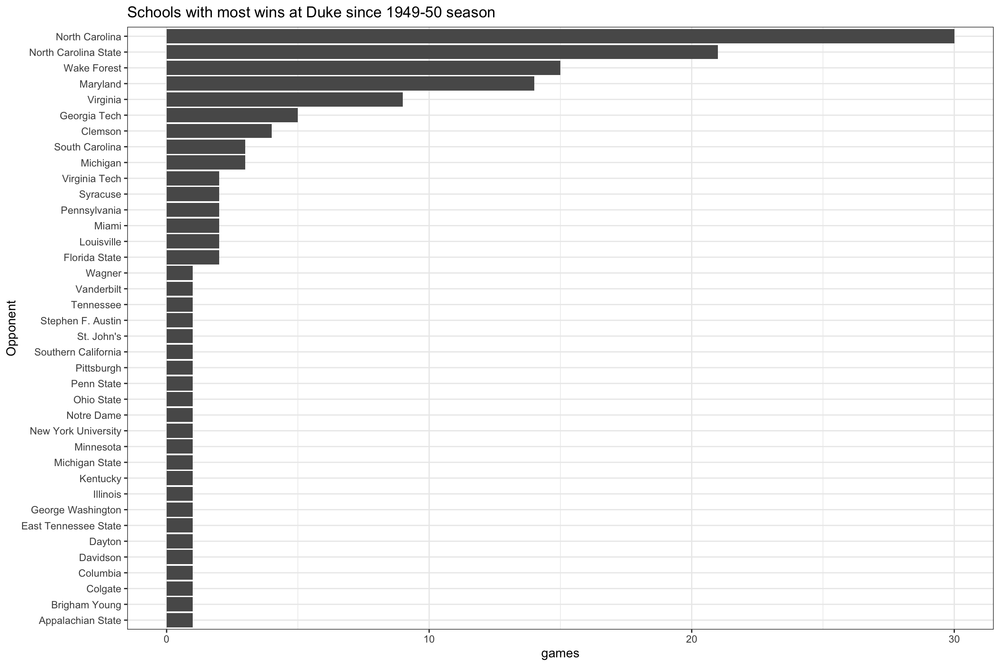
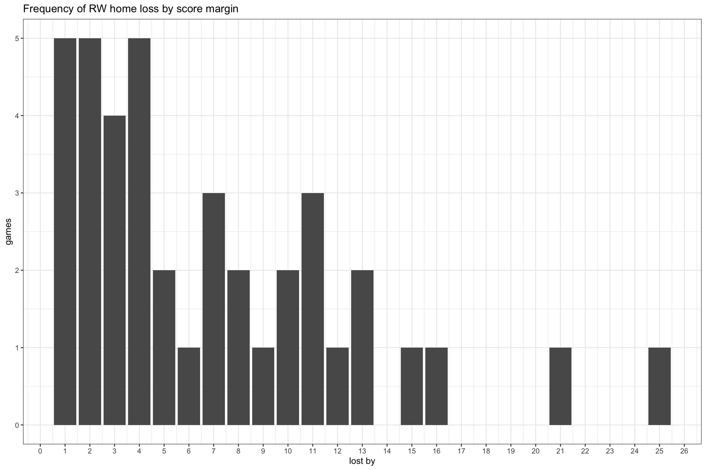
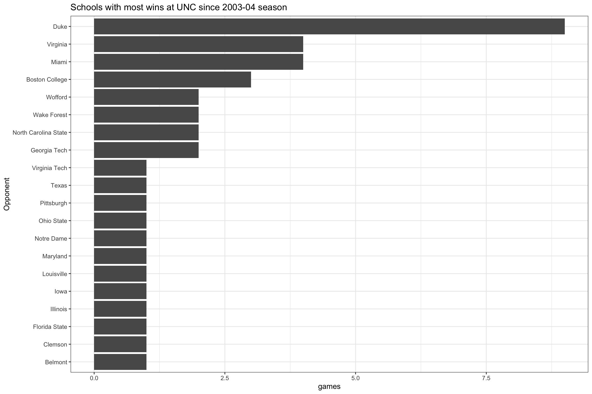

| Season | Game_Date | Opponent_School | Tm | Opp | lost_by |
|---|---|---|---|---|---|
| 1964 | 1964-02-29 | Duke | 69 | 104 | 35 |
| 2002 | 2002-01-31 | Duke | 58 | 87 | 29 |
| 2020 | 2019-12-04 | Ohio State | 49 | 74 | 25 |
| 1951 | 1950-12-20 | Eastern Kentucky | 62 | 85 | 23 |
| 1955 | 1955-02-04 | Duke | 68 | 91 | 23 |
| 1975 | 1975-02-15 | Maryland | 74 | 96 | 22 |
| 2002 | 2002-01-05 | Wake Forest | 62 | 84 | 22 |
| 1953 | 1953-02-21 | North Carolina State | 66 | 87 | 21 |
| 2019 | 2019-01-12 | Louisville | 62 | 83 | 21 |
| 1999 | 1999-02-27 | Duke | 61 | 81 | 20 |
It’s been a tough weekend, not least because Tar Heels lost at home. Sometimes I feel like I’m vested too much in the outcome of the Heel’s basketball games, and if my emotional rollercoaster the rest of the weekend gives any clue, I probably am, just a litttle bit. I tried to shake it off, yet it wasn’t particularly easy, not only because we lost at home, but because the loss was the worst one at home under Roy Williams. So I turn to blogging, after 100+ days of hiatus, as a last resort to restoring my inner peace and calm, before the new workday begins.
First I look at a couple of worst of the worst losses at home (to make the last loss less painful).
Sure enough, 4 losses to Duke (gee, a loss by 35!) and a couple to State (a loss by 21, which matches the weekend’s loss margin). At this point, I’m realizing this is not particularly going to help me feel better about the weekend’s loss. Worse, it might exacerbate the wound, but I decide to keep going. What’s all the home losses look like?


Turns out, of the 122 total home losses (since 1949-50 season), loss by 4 is the most frequent (14 games), followed by loss by 1 (13 games). Sure, Duke won the most with 25 wins against UNC, followed by State (16), Wake Forest (15), and Maryland (13). Other than these 4 schools, no schools have won at UNC more than 6 times since 1949-50 season. I’m already starting to feel a little better. While at it, I decide to look at how Duke’s home loss look like for the heck of it.
| Season | Game_Date | Opponent_School | Tm | Opp | lost_by |
|---|---|---|---|---|---|
| 1959 | 1958-12-29 | Michigan State | 57 | 82 | 25 |
| 1960 | 1960-02-27 | North Carolina | 50 | 75 | 25 |
| 1973 | 1973-02-21 | North Carolina State | 50 | 74 | 24 |
| 1975 | 1975-01-27 | North Carolina State | 71 | 95 | 24 |
| 1975 | 1975-02-08 | Maryland | 80 | 104 | 24 |
| 1983 | 1983-03-05 | North Carolina | 81 | 105 | 24 |
| 1989 | 1989-01-18 | North Carolina | 71 | 91 | 20 |
| 1960 | 1960-02-20 | Wake Forest | 64 | 83 | 19 |
| 1974 | 1974-01-23 | Wake Forest | 71 | 90 | 19 |
| 1950 | 1950-02-24 | North Carolina | 46 | 64 | 18 |


Turns out, of the 135 Duke’s home losses (since 1949-50 season), Carolina beat them 29 times, followed by State (21), Wake Forest (15), Maryland (14), and Virginia (9). Other than these 5 schools, no schools have beat Duke more than 6 times since 1949-50 season.
Another way to look at how sweet home games have been since Roy Williams came home might be to look at how rare the home losses have been.
| Season | Game_Date | Opponent_School | Tm | Opp | lost_by |
|---|---|---|---|---|---|
| 2020 | 2019-12-04 | Ohio State | 49 | 74 | 25 |
| 2019 | 2019-01-12 | Louisville | 62 | 83 | 21 |
| 2013 | 2013-03-09 | Duke | 53 | 69 | 16 |
| 2010 | 2010-01-31 | Virginia | 60 | 75 | 15 |
| 2010 | 2010-01-20 | Wake Forest | 69 | 82 | 13 |
| 2020 | 2020-01-04 | Georgia Tech | 83 | 96 | 13 |
| 2015 | 2015-02-24 | North Carolina State | 46 | 58 | 12 |
| 2006 | 2006-01-14 | Miami | 70 | 81 | 11 |
| 2008 | 2008-02-06 | Duke | 78 | 89 | 11 |
| 2015 | 2015-02-02 | Virginia | 64 | 75 | 11 |
| 2010 | 2010-02-10 | Duke | 54 | 64 | 10 |
| 2010 | 2010-02-24 | Florida State | 67 | 77 | 10 |
| 2013 | 2013-01-10 | Miami | 59 | 68 | 9 |
| 2019 | 2019-02-11 | Virginia | 61 | 69 | 8 |
| 2020 | 2020-01-08 | Pittsburgh | 65 | 73 | 8 |
| 2006 | 2006-01-25 | Boston College | 74 | 81 | 7 |
| 2009 | 2009-01-04 | Boston College | 78 | 85 | 7 |
| 2015 | 2015-03-07 | Duke | 77 | 84 | 7 |
| 2014 | 2014-01-08 | Miami | 57 | 63 | 6 |
| 2004 | 2003-12-20 | Wake Forest | 114 | 119 | 5 |
| 2015 | 2014-12-03 | Iowa | 55 | 60 | 5 |
| 2006 | 2005-11-29 | Illinois | 64 | 68 | 4 |
| 2006 | 2006-02-07 | Duke | 83 | 87 | 4 |
| 2018 | 2017-12-20 | Wofford | 75 | 79 | 4 |
| 2018 | 2018-01-27 | North Carolina State | 91 | 95 | 4 |
| 2020 | 2019-12-15 | Wofford | 64 | 68 | 4 |
| 2014 | 2013-11-17 | Belmont | 80 | 83 | 3 |
| 2014 | 2013-12-18 | Texas | 83 | 86 | 3 |
| 2018 | 2018-02-27 | Miami | 88 | 91 | 3 |
| 2020 | 2020-01-11 | Clemson | 76 | 79 | 3 |
| 2004 | 2004-02-05 | Duke | 81 | 83 | 2 |
| 2008 | 2008-01-19 | Maryland | 80 | 82 | 2 |
| 2010 | 2010-01-16 | Georgia Tech | 71 | 73 | 2 |
| 2020 | 2020-02-08 | Duke | 96 | 98 | 2 |
| 2020 | 2020-02-15 | Virginia | 62 | 64 | 2 |
| 2007 | 2007-02-13 | Virginia Tech | 80 | 81 | 1 |
| 2012 | 2012-02-08 | Duke | 84 | 85 | 1 |
| 2015 | 2015-01-05 | Notre Dame | 70 | 71 | 1 |
| 2016 | 2016-02-17 | Duke | 73 | 74 | 1 |
| 2020 | 2020-02-01 | Boston College | 70 | 71 | 1 |
Ok, a good start. There’s been only 30 home losses since 2003-04 season, approximately 2 home losses per season. Only 2 down days over a 4 months period each season. Put it that way, I feel like I can survive this weekend’s L.


Since 2003-04 season, again loss by 1 and 4 were most frequent, each with 4 games. Not surprisingly, Duke has won 8 games at UNC, and somewhat surprisingly, Miami has second most wins at UNC since RW came home. This weekend’s win gives Louisville its first win at Carolina, it looks like.
In addition to the worst home loss in 16 years, what made things worse for me personally was the fact that Duke won their game against Florida State later same day. Again, this is just me, but after the home loss, I was begging for Florida State to win their home game, so that I can have somewhat so-so weekend even with the home loss, even though I knew how rare such event was.
| Season | Game_Date | Opponent_School | Tm | Opp | lost_by |
|---|---|---|---|---|---|
| 2020 | 2020-02-15 | Virginia | 62 | 64 | 2 |
| 2020 | 2020-02-01 | Boston College | 70 | 71 | 1 |
| 2020 | 2020-01-11 | Clemson | 76 | 79 | 3 |
| 2020 | 2020-01-08 | Pittsburgh | 65 | 73 | 8 |
| 2020 | 2020-01-04 | Georgia Tech | 83 | 96 | 13 |
| 2019 | 2019-01-12 | Louisville | 62 | 83 | 21 |
| 2018 | 2017-12-20 | Wofford | 75 | 79 | 4 |
| 2015 | 2014-12-03 | Iowa | 55 | 60 | 5 |
| 2009 | 2009-01-04 | Boston College | 78 | 85 | 7 |
| 2008 | 2008-01-19 | Maryland | 80 | 82 | 2 |
| 2006 | 2006-01-14 | Miami | 70 | 81 | 11 |
| 2004 | 2003-12-20 | Wake Forest | 114 | 119 | 5 |
| 2003 | 2002-12-07 | Kentucky | 81 | 98 | 17 |
| 2002 | 2001-11-20 | Davidson | 54 | 58 | 4 |
| 2001 | 2000-12-02 | Kentucky | 76 | 93 | 17 |
| 2000 | 2000-01-22 | Florida State | 71 | 76 | 5 |
| 1999 | 1999-01-13 | Maryland | 76 | 89 | 13 |
| 1989 | 1989-01-07 | Iowa | 97 | 98 | 1 |
| 1970 | 1970-02-21 | South Carolina | 62 | 79 | 17 |
| 1968 | 1968-02-28 | South Carolina | 86 | 87 | 1 |
| 1966 | 1966-02-12 | Virginia Tech | 75 | 81 | 6 |
| 1966 | 1965-12-31 | West Virginia | 97 | 102 | 5 |
| 1963 | 1963-02-09 | Wake Forest | 71 | 72 | 1 |
| 1962 | 1962-02-10 | Wake Forest | 80 | 87 | 7 |
| 1962 | 1961-12-11 | Indiana | 70 | 76 | 6 |
| 1953 | 1953-02-21 | North Carolina State | 66 | 87 | 21 |
| 1952 | 1952-01-26 | North Carolina State | 53 | 58 | 5 |
| 1950 | 1950-02-07 | Wake Forest | 54 | 57 | 3 |
Ok, 22 such days when Carolina lost at home while Duke won on the same day since 1949-50 season. And only 6 such days since 2003-04 season. Make it 7 with this weekend’s case, but nevertheless at the end of the day, an L is an L, and we had two road Ws before this L, and I hope the team shook it off well over the weekend. Writing this post definitely helped me feel a whole lot better about this weekend and get ready for a new day tomorrow!